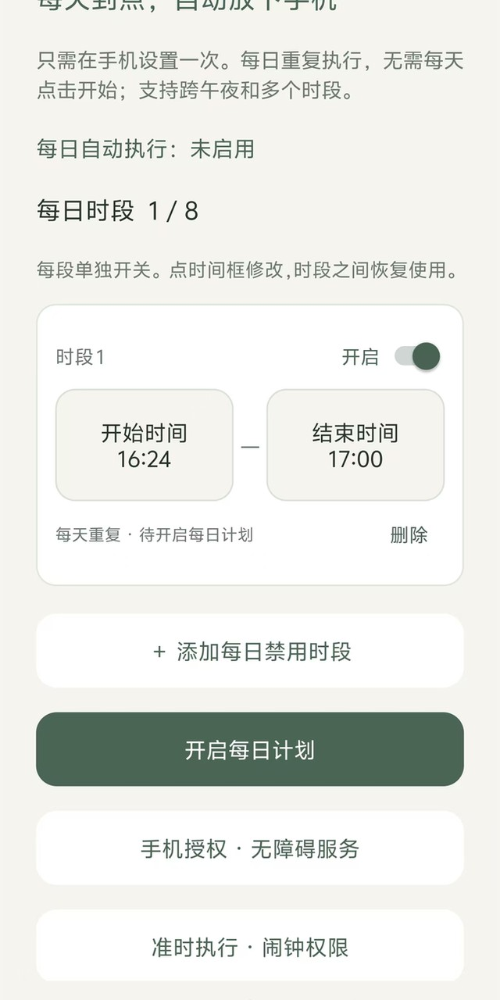
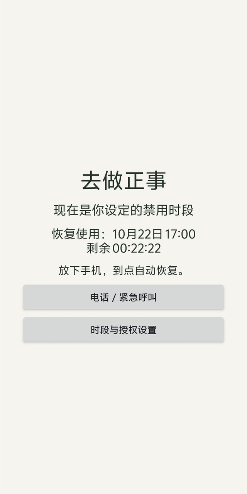

选择开始与结束
横排双框，数字滚轮选择小时与分钟。支持多个分离时段，每段都能单独开关。
开始时间09:00—结束时间12:00
ANDROID 每日时段助手 V1.3.1
考研备考、日常学习，或陪孩子安排手机时间。
给想完成的事，留一个不被打断的时段。
Android 8.0+ · 无需账号 · 手机授权后使用
让计划，自己发生
不用每天点一次“开始 15 分钟”。
你安排时段，手机按每日计划执行。
横排双框，数字滚轮选择小时与分钟。支持多个分离时段，每段都能单独开关。
在手机上启用无障碍服务、准时闹钟，并允许后台运行和自启动。每日计划自动重复。
时段内显示专注拦截页，结束时自动撤下。比如中午 12:00—14:00，可以正常使用手机。
10 秒动漫使用故事
和宣传片里的她一起，
给学习留一段完整的时间。
动漫人物、合成女声与截图合成展示。
用于说明使用场景，实际效果受手机系统与授权状态影响。
视频里的页面，在手机里使用
最多 8 个每日时段；支持跨午夜。
已有计划可修改、关闭或删除。
备考刷题 / 读书写作 / 日常学习
家长陪孩子一起安排手机时间
以下为用户提供的设置页与禁用页截图，保留原有页面状态。


从今天的一段专注开始
免费 Android 安装包，代码与使用说明在 GitHub。
安装后添加时段、开启每日计划，并在系统设置中启用“去做正事 · 每日时段”无障碍服务。允许准时闹钟、后台运行与自启动。全部设置可以在手机上完成，无需电脑配置设备所有者。
手机授权模式可通过撤销权限、修改时段、卸载或强行停止绕过。它帮助你执行自己的计划，不承诺绝对强制。不会随机修改系统密码。不同品牌后台策略和兼容性需要在目标手机上验证。
Android 应用没有网络权限。每日模式仅通过无障碍窗口事件判断当前应用标识，不读取屏幕文字、聊天或密码，不截图、不模拟点击；应用标识不保存、不上传。页面本身也不使用统计追踪或登录。